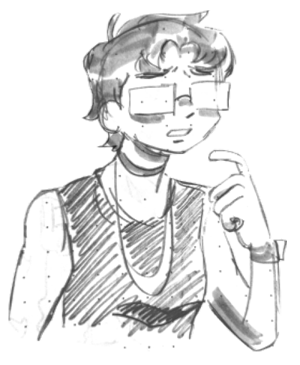
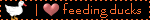

hello, i'm kels, the webmaster of this site. i have a big boy degree and i'm a site reliability engineer.
this site is just for me to have fun and share things.
my displinary interests include: games, technological accessibility issues, ethics, complex systems, information science, esolangs and compilers. i am trying to learn functional programming but i fear i am not smart enough.
currently obsessed with: my own esolang, poetry, being in love, rollerblading
i also enjoy casual stamp collecting, stationary, postcrossing, trains, drawing, zine making, analog photography, rock climbing, and crochet.
